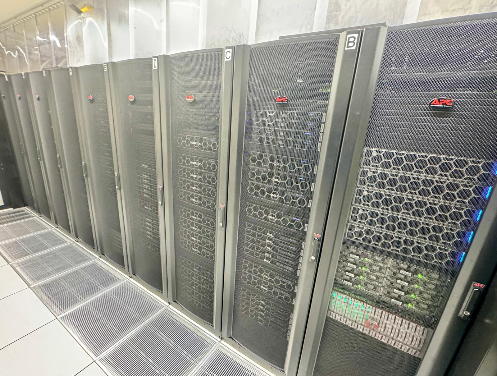

Research Cluster (Aoraki)¶
On this Page
- What the Aoraki Research Cluster is and how it is put together
- The partitions you can run jobs in, and how to choose between them
- The limits that apply to your jobs and to your account
- The hardware in each node
The Aoraki Research Cluster is the University of Otago's shared high performance computing system. It gives researchers access to CPUs, GPUs, large-memory nodes and high-speed storage, along with specialised software and libraries for scientific and data science computing.

It is shared infrastructure, and that is the main thing that makes it different from a workstation. You are not limited to the hardware on your desk, but you also do not get a machine to yourself: you describe the resources your work needs, and a scheduler decides where and when it runs.
If you need software or a configuration that is not already available, ask the eResearch Support team at rtis.support@otago.ac.nz.
How the Cluster is Put Together¶
graph LR;
A["Your computer"] -->|"SSH or OnDemand"| B["Login node<br/>aoraki-login"]
B -->|"sbatch or srun"| C{"Slurm<br/>scheduler"}
C -->|"allocates resources"| D["Compute nodes<br/>aoraki01–46"]
B --- E[("Shared storage<br/>/home, /projects, /weka")]
D --- ELogin node — where you land when you connect over SSH or through OnDemand. Use it to edit scripts, move files around and submit work. It is shared by everyone, so it is not the place to run your analysis — see Login Node Usage.
Compute nodes — where your work actually runs. You do not log in to them directly; you reach them by asking Slurm for an allocation.
Slurm — the scheduler. You tell it how many cores, how much memory, how long, and whether you need a GPU, and it finds a node that can satisfy that request. See Running Jobs.
Shared storage — every node sees the same files, so a job on any compute node can read the data you put in /home, /projects or /weka. See the Storage Overview.
Getting started
If you have not used the cluster before, get access first, then work through Running Jobs. You can also use most of the cluster from your browser through OnDemand, which writes the Slurm job for you.
Partitions¶
A partition is a named group of nodes with its own limits on job size and run time. Every job goes to a partition — if you do not name one, it goes to aoraki, the default.
Choosing well matters: a partition with the hardware you need but a long queue may start later than a smaller one that is mostly idle.
Choosing a Partition¶
| If your job needs… | Use | Notes |
|---|---|---|
| Nothing in particular | aoraki |
The default. Balanced cores and memory, 27 nodes, so usually the quickest to start. |
| Lots of cores | aoraki_bigcpu |
Up to 252 cores on a node. |
| Lots of memory | aoraki_bigmem |
Up to 2000 GB on a node. |
| Fast single-core performance | aoraki_fastcore |
Fewer cores per node, but the highest clock speed on the cluster. |
| To run for longer than 14 days | aoraki_long |
Up to 30 days. |
| A GPU | aoraki_gpu |
The general GPU pool — whichever of its A100, H100 or L40 nodes is free first. Use a specific partition such as aoraki_gpu_H100 when your work needs that model, or that much GPU memory. |
| Very little, or not for long | aoraki_small, aoraki_short |
These use the normally idle CPU cores on GPU nodes, so small and short jobs can start without waiting for a general-purpose node. |
Before you submit, Queue and Availability shows how busy the cluster is right now, and how long jobs on each partition have recently waited before starting.
Partition Limits¶
These are the default maximum resources a single job can request. If your work needs more, contact rtis.support@otago.ac.nz to discuss how it can be accommodated.
| Partition | Time Limit (Days) | Max Running Jobs | Max CPU | Max Mem | Max GPUs | Num Nodes | NodeList |
|---|---|---|---|---|---|---|---|
| aoraki* | 7 | 100 | 126 | 1000G | - | 27 | aoraki[01-09,14-15,17,20-26,34-41] |
| aoraki_bigcpu | 14 | 50 | 252 | 1500G | - | 10 | aoraki[15,20-23,34-38] |
| aoraki_bigmem | 14 | 10 | 126 | 2000G | - | 5 | aoraki[14,17,24-26] |
| aoraki_fastcore | 14 | 50 | 94 | 1500G | - | 5 | aoraki[39-43] |
| aoraki_long | 30 | 25 | 252 | 2000G | - | 10 | aoraki[20-26,34-36] |
| aoraki_short | 1 | 250 | 32 | 256G | - | 3 | aoraki[11,12,16] |
| aoraki_small | 7 | 30 | 8 | 32G | - | 7 | aoraki[18,19,27,28,31-33] |
| aoraki_gpu | 7 | 2 | 16 | 150G | 2 | 10 | aoraki[11,12,16,18,19,27,28,31-33] |
| aoraki_gpu_H100 | 7 | 2 | 16 | 150G | 2 | 2 | aoraki[16,30] |
| aoraki_gpu_L40 | 7 | 2 | 16 | 150G | 2 | 5 | aoraki[18,19,31-33] |
| aoraki_gpu_A100_80GB | 7 | 2 | 16 | 150G | 2 | 2 | aoraki[11,12] |
| aoraki_gpu_A100_40GB | 7 | 2 | 16 | 150G | 2 | 2 | aoraki[27,28] |
| aoraki_gpu_L4_24GB | 7 | 2 | 8 | 60G | 2 | 1 | aoraki[29] |
| aoraki_gpu_RTX6000^ | 7 | 2 | 16 | 150G | 2 | 2 | aoraki[45-46] |
| aoraki_gpu_H200^ | 7 | 2 | 16 | 220G | 2 | 1 | aoraki44 |
| aoraki_gpu_RTX3090 | 7 | 2 | 8 | 60G | 2 | 3 | aoraki-g[01,02,05] |
Reading this table
- Partition — an asterisk (
*) marks the default partition. A caret (^) marks new hardware where access is limited and must be requested from rtis.support@otago.ac.nz. - Time Limit (Days) — how long a job may run. This can be extended on request, and an extension may exceed the partition's standard wall time.
- Max Running Jobs — how many of your jobs can run at once in that partition. The rest wait in the queue.
- Max CPU — cores you can request on a single node.
- Max Mem — memory (GB) you can request on a single node.
- Max GPUs — GPUs you can request on a node for one job.
-means the partition has no GPUs. - Num Nodes / NodeList — how many nodes are in the partition, and which ones.
Note
Every cluster node reserves 2 cores for the OS and Weka storage, so the cores available to jobs are 2 fewer than the node's total.
Limits on Your Account¶
Alongside the per-job limits above, a few limits apply across everything you submit:
| Limit | Value |
|---|---|
| Submitted jobs | 5000 per user (OnDemand jobs are not counted) |
| Running GPU jobs | 2 per GPU partition — further GPU jobs stay queued |
| Running OnDemand jobs | 10 per user |
| Nodes per job | GPU jobs and OnDemand jobs are limited to a single node |
Node Hardware¶
The cluster is not uniform. Nodes differ in cores, memory and GPU, and some work benefits from — or requires — a particular type.
| Node Count | Node Type | CPU | RAM | GPU | CPU Clock |
|---|---|---|---|---|---|
| 1 | aoraki-login | 2x 64 cores AMD EPYC 7763 | 1TB DDR4 3200 MT/s | - | 2.4GHz |
| 9 | aoraki[01-09] | 2x 64 cores AMD EPYC 7763 | 1TB DDR4 3200 MT/s | - | 2.4GHz |
| 5 | aoraki[14,17,24-26] | 2x 64 cores AMD EPYC 7763 | 2TB DDR4 2933 MT/s | - | 2.4GHz |
| 10 | aoraki[15,20-23,34-38] | 2x 128 cores AMD EPYC 9754 | 1.5TB DDR5 4800 MT/s | - | 2.2GHz |
| 5 | aoraki[39-43] | 2x 48 cores AMD EPYC 9474F | 1.5TB DDR5 4800 MT/s | - | 3.6GHz |
| 2 | aoraki[11,12] | 2x 64 cores AMD EPYC 7763 | 1TB DDR4 3200 MT/s | 2x A100 80GB (CUDA 12.5, NVLink 20.55GB/s) | - |
| 2 | aoraki[27,28] | 2x 32 cores AMD EPYC 7543 | 1TB DDR4 3200 MT/s | 2x A100 40GB (CUDA 12.5, NVLink 16.21GB/s) | - |
| 1 | aoraki16 | 2x 56 cores Intel Xeon 8480+ | 1TB DDR5 4800 MT/s | 4x H100 80GB HBM3 (CUDA 12.4, NVLink 121.29GB/s) | - |
| 1 | aoraki30 | 2x 32 cores Intel Xeon 8562Y+ | 1TB DDR5 4800 MT/s | 4x H100 96GB NVL (CUDA 12.5, NVLink 237.16GB/s) | - |
| 2 | aoraki[18,19] | 2x 32 cores AMD EPYC 7543 | 1TB DDR4 3200 MT/s | 3x L40 48GB (CUDA 12.5, NVLink 24.37GB/s) | - |
| 3 | aoraki[31-33] | 1x 64 cores AMD EPYC 9554P | 768GB DDR5 4800 MT/s | 3x L40S 48GB (CUDA 12.5, NVLink 24.48GB/s) | - |
| 1 | aoraki29 | 2x 32 cores Intel Xeon 8562Y+ | 1TB DDR5 4800 MT/s | 7x L4 24GB (CUDA 12.5, NVLink 21.05GB/s) | - |
| 1 | aoraki44 | 2x 64 cores AMD EPYC 9575F | 2.2TB DDR5 6400 MT/s | 8x H200 144GB | - |
| 2 | aoraki[45-46] | 2x 64 cores AMD EPYC 9575F | 1.5TB DDR5 6400 MT/s | 8x RTX6000 PRO 98GB | - |
| 2 | standalone (Threadripper workstation) | 32 cores AMD Ryzen Threadripper PRO 3975WX | 128GB DDR4 3200 MT/s | 1x RTX 3090 24GB (CUDA 12.5) | - |
| 3 | standalone (Ryzen 9 workstation) | 16 cores AMD Ryzen 9 5950X | 64GB DDR4 3200 MT/s | 1x RTX 3090 24GB (CUDA 12.5) | - |
| 4 | standalone (Xeon E5-2620 workstation) | 2x 6 cores Intel Xeon E5-2620 v3 | 256GB DDR4 3200 MT/s | 2x RTX A6000 48GB | - |
Reading this table
- GPU —
-means the node has no GPU. Interconnect bandwidth (e.g. NVLink) and CUDA version are noted where known. - CPU Clock — base clock speed, where recorded.
-means it was not recorded for that node; currently only tracked for CPU-only nodes. - standalone — dedicated GPU workstations outside the main
aoraki[NN]node numbering.